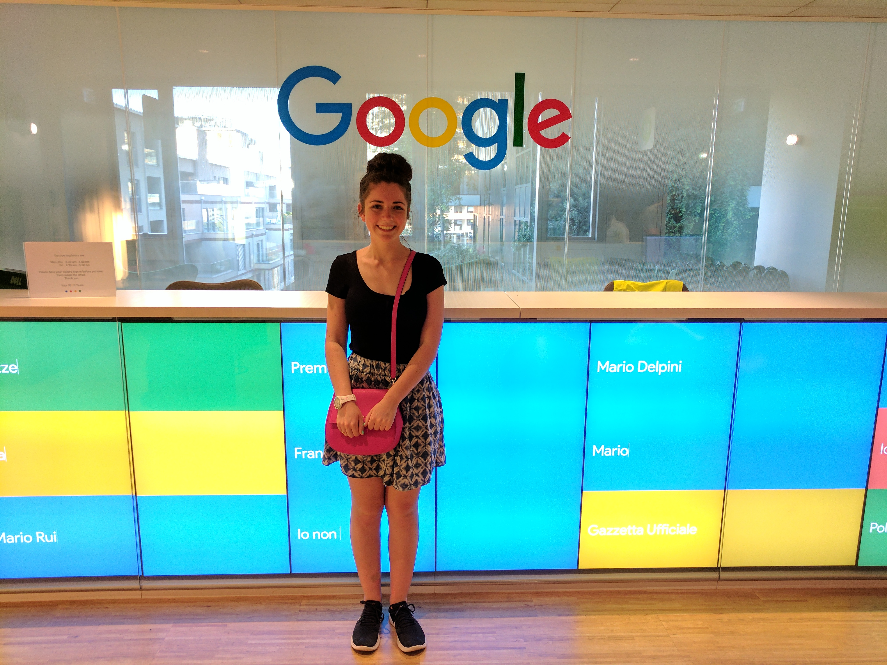

I am a rising sophomore at Brigham Young University, where I am studying
Computer Science with an emphasis on Data Science.
During the school year I work as a research assistant in the
Perception, Control, Cognition
Lab at my school. I have been researching applicatoins of the Q-learning
Algorithm in Reinforcement learning.
Currently I am a Google STEP intern, which is the reason I am making this portfolio!
My favorite color is purple, my favorite food is Costco Pizza OR anything
with avocados in it, and in my free time I like to plan international
trips, play video games, and read good books!
Past Projects
Some of my past projects include:
Singly and Doubly Linked Lists
Creading and Implementing Iterators in Linked Lists
Using STL Stack to convert expressions from infix to
post/prefix and computing said expressions
Creating and implementing a Deque, Queue, Stack, and Vector to
simulate a Roundhouse and Turntable for trains
Solving a user-input 3D maze using recursion
Creating a Binary Search Tree
Creating an Unordered Hashmap and Ordered Set to simulate Pokemon
battles
Using Quicksort to sort data recursively
Reusing my Binary Search Tree to Create an AVL tree
Please refer to my
GitHub if you would like to see the code behind my projects

I REALLY
Love To
Travel!
I've been a lot of cool places, and there are even more places
that I'm dying to visit! Enjoy some photos from my trips!
Photos featured here are from trips to Italy, Thailand
and South Africa. Fair warning, there are a TON of elephant
pictures. I love elephants.
Comments
Click below to see comments!